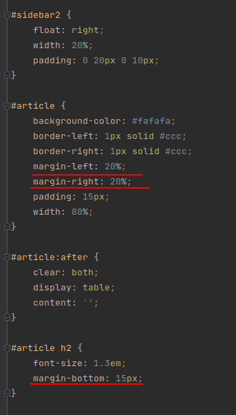

Величину відступів можна вказувати у пікселах (px), відсотках (%) або інших допустимих для CSS одиницях. Значення може бути як позитивним, і негативним числом. Також можна вказувати значення auto та inherit.
auto - Вказує, що розмір відступів автоматично розраховується браузером.
inherit - Наслідує значення батька.
margin-bottom
Встановлює величину відступу нижнього краю елемента.
margin-left
Встановлює величину відступу лівого краю елемента.
margin-right
Встановлює величину відступу правого краю елемента.
margin-top
Встановлює величину відступу верхнього краю елемента.
margin
Встановлює величину відступу кожного краю елемента. 